Research · 2025 – 2026 · Independent research
Debris removal by nodal precession
Multi-target active debris removal that lets orbital physics do the plane changes.

- 17%of expected collisions avoided over 200 years: 5.9 of 34.7 (90% interval on the mean 5.1–6.7)
- 117objects removed by controlled entry on 9 launches and 146 kits (5–95%: 99–129)
- 34%avoided by stricter disposal rules alone, about 250 removals on top reach 50%
- $1.0Bper collision avoided, 33% cheaper per share than the earlier design
How to reduce Kessler growth with the fewest launches. I started with a tour that uses the natural drift of orbit planes and 8U nanotugs, tested that concept until it failed, then opened the question fully: which derelicts drive collisions, what removes them, and what it does to LEO over 200 years. The best campaign avoids 17% of expected collisions. Stricter disposal rules for new satellites do more, and the two together reach about half.
What changed
| First version | Now | Why | |
|---|---|---|---|
| What the mission does | 40 tugs remove 20 objects | 146 chemical kits clamp the adapter ring and bring stages down by controlled entry | Two tugs give only 54–74 m/s; uncontrolled entry breaks the casualty limit by 3–7× |
| How targets are picked | Most objects reachable | Collision probability × fragments × lifetime | Top 20 are almost all SL-16; the SL-8 family holds 41% of risk |
| Deorbit or control | Stick on and hold | Removal; control alone avoids 0.07 of 2.15 | A held stage is still there, and its kit dies first |
| Kit to the stage | Carrier stops, kit crosses 1 km | Carrier never stops; kit climbs to a safe co-elliptic path | A dead kit misses by 1.7 km, not 3 m; carrier xenon about 150 kg, not 520 |
| Kits per carrier | One ring, 5 ports | Four stacked rings, 20 ports, 19 stages | One kit brings the carrier down; five rings fail the load check |
| Result over time | 95.4% fewer collisions | 5.9 of 34.7 avoided in 200 years (17%) | Long-term model with fair baselines, still reduced rather than closed against published growth |
| Tour length | 20 objects in 511 days | 20 in 1,491 days; risk tour of 19 in 2,413 | Real thrust, insertion, phasing and stops |
| Tug mass | 12 kg | 23.6 kg with margin, on iodine | Bottom-up build; 4 kg of xenon does not fit in 8U |
| Tugs on the carrier | 40 by simple stacking | 40 only in custom tandem tubes; commercial canisters give 20 | Real port box; the old box was a 12U envelope |
| Target tumble | Median 3°/s, tail above 10°/s | 0.37–3.1°/s, n = 7 | Published light-curve periods |
| Objects against the alternative | 38 (single estimate) | Median 29 at 2 km/s and 7 years | From all 159 starts, against 9 impulsive and 6 at the same altitude |
| Fuel saving | 59.8% | 80% with 279 days, 13% with 30 (1° gap) | The saving has no meaning without the time allowed |
| Best lowering depth | 150–300 km | No best depth exists | The gain per unit delta-V rises steadily with depth |
| Why lowering helps | Observed in simulation | Proved, with a remainder bound | Net gain per unit delta-V is about 1 + 3x |
| Gap from the exact optimum | 10.3% | 1.9% (95%: 0.6–3.4) | Tuned beam search, 32 small instances |
| Catalogue | 2025 files: 1,288 and 593 | Frozen 2026 snapshot: 1,151 and 913 | The 2025 counts reproduce exactly; that filter kept re-entered objects |
Conclusion
The nodal-drift tour holds up and drives the final mission. What failed was my starting concept: two 8U tugs cannot remove a 1.4 t stage, and control alone does not reduce long-term risk. Ground safety forces a controlled entry, a chemical burn and a clamp on the adapter ring. The best campaign removes about 117 objects on 9 launches, avoids 17% of expected collisions over 200 years, and costs about $5.9 billion. Most future collisions come from objects not yet launched, so disposal rules beat removal: rules alone give 34%, and rules plus about 250 removals reach 50%. This is a public decision, not a commercial case, and the first step is a flight test of kit autonomy at a real stage.
01The idea
Earth is not a perfect sphere, and its equatorial bulge makes the plane of an orbit rotate slowly, at a rate that depends on altitude and inclination. Two pieces of debris in different planes drift into line with each other if the spacecraft waits at the right altitude. That is a plane change paid for in time instead of fuel, and plane changes are normally the most expensive manoeuvres in a debris-removal mission.
In the worked example, a chaser at 775 km and a target at 975 km, both at 82.9°, start with their planes 40° apart. The lower plane turns at -0.824° a day against -0.749° for the higher one, so the gap closes at 0.076° a day and the planes coincide after about 527 days, with no burn.


02What waiting saves
A single plane-change burn costs several km/s, more than a whole 2 km/s mission budget once the angle passes a few degrees. Dropping 100 to 400 km, waiting and climbing back costs about 100 to 420 m/s, and the price is time. How deep to drop sets how long the wait is, and the time-to-align curves show the trade directly. The 1° alignment window used in the figure is an assumed tolerance, not a measured one, and the calculation is impulsive, circular and J2-only, with no drag.


03A closed-form result
Lowering a spacecraft by some amount changes the nodal rate by more than raising it by the same amount, with a rate ratio of about 1 + (9/2)(Δa / a), which is 1.063 at 100 km, 1.130 at 200 km and 1.278 at 400 km. Lowering also costs somewhat more fuel than raising, by a Hohmann cost ratio of about 1 + 1.5 Δa / a, so the net gain per unit of fuel is real but modest. It still gives a rule for choosing where to wait.

04From a catalogue to a mission
The pipeline starts from the public satellite catalogue, frozen and hash-pinned on 18 August 2026: 70,292 rows, of which 1,151 are reachable non-operational payloads and rocket bodies at 600 to 1,500 km. Clustering gives 913 objects in 51 sub-clusters, a candidate pool. The tours themselves use per-band pools with real orbit planes: 159 SL-8 rocket bodies, 135 sun-synchronous objects, 28 Iridium-class and 20 SL-16. The 2025 run's counts reproduce exactly from my original files: 63,553 rows in the April 2025 catalogue, 1,288 non-operational objects at 600 to 1,500 km from the March 2025 catalogue the code read, and 593 objects in 40 sub-clusters. That 2025 filter had no decay check, so 193 of the 1,288 and 63 of the 593 had already re-entered; restricted to objects still in orbit, the same rule gives 1,151 on the 2026 snapshot. The plane-spread panel below uses real two-line element sets.


05One mission, end to end
A tour optimiser picks the first target, the order of visits and the lowered altitude for each leg. The saved tour on the real SL-8 rocket-body pool visits 29 objects in 28 legs over 7.00 years for 1,445.5 m/s, a mean of 52 m/s a leg and 121 at most, including an assumed 15 m/s of proximity operations per leg. Replaying it against the repo's leg costs reproduces the total exactly, and every arrival lands on its target plane. Counts are best-of-top-60-starts and assume the chaser is inserted at the first object for free.

06Solvers and fleet reach
Starting from every one of the 159 SL-8 objects, the median tour reaches 29 objects at 2 km/s and 7 years and 67 at 5 km/s and 15 years. Against an exact dynamic-programming optimum on 32 small instances, a tuned beam search is 1.9% from optimal (95% interval 0.6 to 3.4%), the draft's configuration 10.3%, greedy 18.7% and NSGA-II 9.7%. The weight that trades objects against fuel mattered more than the beam width. The benchmark and fleet panels below still show best-of-60-start counts from the earlier configuration and are kept for the band comparison only. An earlier single-mission estimate of 38 objects did not survive; the history panel mixes unlike methods and says so.


07The surrounding study
The project also compares deployment concepts for the removal itself (nanotugs, electrodynamic tethers, drag sails, ion-beam shepherds, laser ablation, solid-rocket packages and hybrids), choosing the right one per altitude band, and couples the optimiser to a debris-growth projection to rank campaigns by collision risk avoided. The estimate is ranking-level only: a median SL-8 tour avoids about 0.04 collisions over 25 years (5 to 95%: 0.025 to 0.055).
08Version 3: audit and paper
The study has been re-audited and rewritten as a paper, now 32 pages, with every number regenerated from one script on a frozen, hash-pinned catalogue snapshot (2026-08-18). That snapshot gives 1,151 actionable objects in the working band and 913 objects in 51 sub-clusters; the earlier 63,553, 1,288 and 593 now reproduce exactly from the original 2025 files, and differ from the 2026 numbers mainly because the 2025 filter did not drop objects that had re-entered.
The lowering result is now proved, not just observed. The drift-rate ratio exceeds 1 by convexity, with the series 1 + (9/2)x + (81/8)x² and a remainder bound, where x is the altitude change over the orbit radius. Lowering costs more fuel by a Hohmann ratio of 1 + 1.5x, so the net gain per unit delta-V is about 1 + 3x. The draft's best depth of 150 to 300 km below the targets does not exist: the gain per unit delta-V rises steadily with depth. For eccentric objects (e above about 0.03) raising beats lowering. The old 59.8% saving has no time-free meaning: for a 1° plane gap it is 80% if 279 days are allowed and 13% if 30 days.
On the SL-8 rocket-body pool, starting from every one of 159 objects, the median tour reaches 29 objects at 2 km/s and 7 years and 67 at 5 km/s and 15 years. Impulsive plane changes reach 9 and 19, and waiting without changing altitude reaches 6 and 12. The earlier 29 to 53 figures were best-of-60-starts counts. A tuned beam search is 1.9% from the exact optimum on 32 small instances (95% interval 0.6 to 3.4%), against 10.3% for the draft's configuration. Numerical propagation of sampled legs closes the node to 0.05° or better. The result is most sensitive to the proximity-operations allowance: 50 m/s costs about 8 objects. The collision-risk benefit is about 0.04 collisions avoided over 25 years (5 to 95%: 0.025 to 0.055), a ranking-level estimate only.
Of ten new methods screened with confidence intervals, two are supported: a parked carrier that places expendable kits, which places kits 4.5 to 6 times faster and cuts launch mass 5 to 50% as an upper bound that ignores kit avionics, and choosing the object pool by how concentrated its orbit planes are (21 objects against 16 and 14). Low-thrust profiles, eccentric orbits, bielliptic and Oberth plane changes for small angles, Moon-and-Sun alignment, drag sails at 975 km, towing and cluster splitting did not hold up. Honest novelty: no new astrodynamics. Lowering and J2 phasing are prior art, and the closed-form ratio and the eccentric reversal are elementary and apparently unpublished. The contribution is the evidence: the audit, the frozen snapshot, the exact-optimum check and the fair baselines.
09A servicer, not just a tour
This section is an earlier generic kit study. Note from the later tug analysis: the drag area here used the radar cross-section (4.34 m²); a tumbling stage shows 13.6 m², so a 25-year life needs a perigee of 500 km, not 416 km, about 124 m/s and not 147 m/s. The sections below replace it with the actual vehicle.
A tour is only useful if a real spacecraft can fly it, so I sized one. Flown and planned removal demonstrations each handle a single object; a drift-phased carrier is the step after that. Launch mass is set by the de-orbit kits, not the servicer: a kit that can actually lower a 1,435 kg SL-8 rocket body needs 81 to 137 kg of propellant, which raises a 16-kit carrier from 3.3 t to 4.8 to 5.9 t. Parked 400 km below its cluster, a chemical carrier releases its last kit about 31 months in. With only 3 years of life the object count stalls near 15 to 17 whatever the delta-V budget, so mission life matters more than fuel. The cost class is about $566M in 2024 dollars (10 to 90%: $396M to $736M), roughly $35M per object, mostly development, and the reliability results rest on an assumed failure-rate range because I found no sourced value.

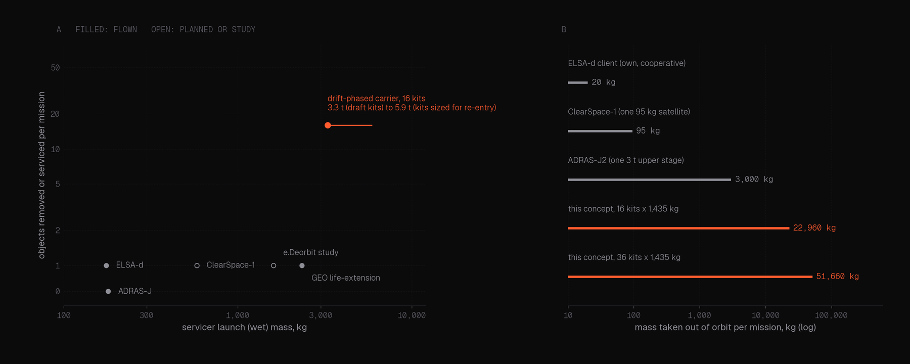

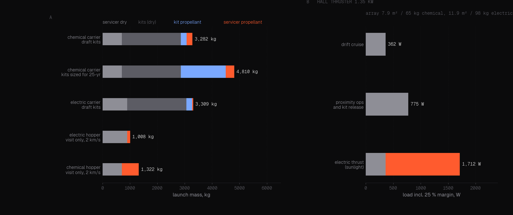

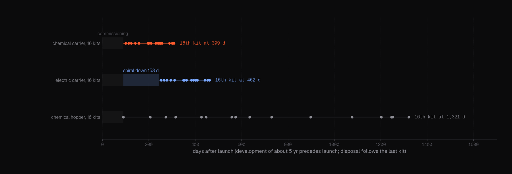

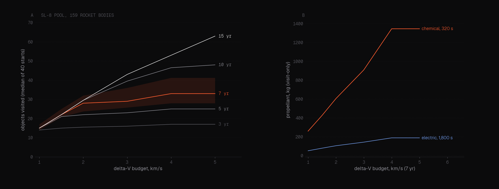
10The concept, tested
The first version of this work was built around a real architecture: an ESPA-class electric carrier with 40 8U nanotugs, two per object, so 20 objects on 2,000 m/s. The paper I then wrote replaced that with a generic kit, which hid the hardest question. So I went back and tested the original concept end to end, with a real thruster, real power, every object moving, and real tugs.
The short answer is that the tour and the storage close, and removal with two tugs does not. A pair of 8U tugs cannot bring down a 1,435 kg stage. The published nano-tug work never claimed it could: it proposes keeping a derelict in orbit, stabilised, and dodging collisions. That is the mission that closes here. Removal needs either five to seven tugs per stage, or paired 41 kg electric kits, which are no longer 8U.
The next six sections are that test. Later in this page I drop the 8U tug and look for the best mission from scratch.
11Which objects, and when
The earlier tours maximised how many objects were reached. What matters for Kessler growth is how much future risk comes off, so I ranked derelicts by mass, cross-section, the density of their altitude band and the fragments a collision would make. Maximising risk removes 19% more modelled risk than maximising count (132.5 against 111.8 fragments of 10 cm or larger over 25 years), at the price of time: 2,413 days against 1,491. The same vehicle in the SL-16 band reaches 2.9 times the SL-8 risk, so the choice of band matters more than the tour.
Nothing stays where it is. All the objects are propagated from the frozen catalogue to an assumed 2032 launch and through the mission, and a real plan would be re-solved on fresh elements. Including in-plane phasing, which the earlier model left out, gave the one new result here. Phase is locked to the node at 2,823 degrees of phase per degree of node, so depth and dwell alone cannot close both. A tiny inclination offset held during the wait does, at a median 0.5 m/s and at most 5.1 m/s a leg.

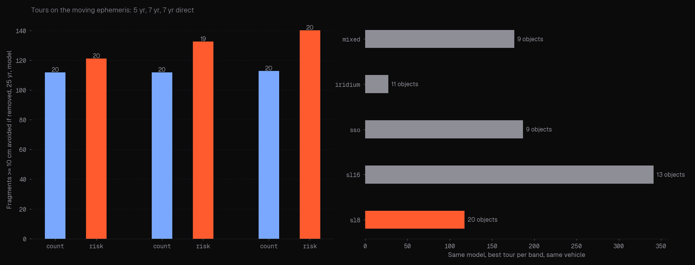

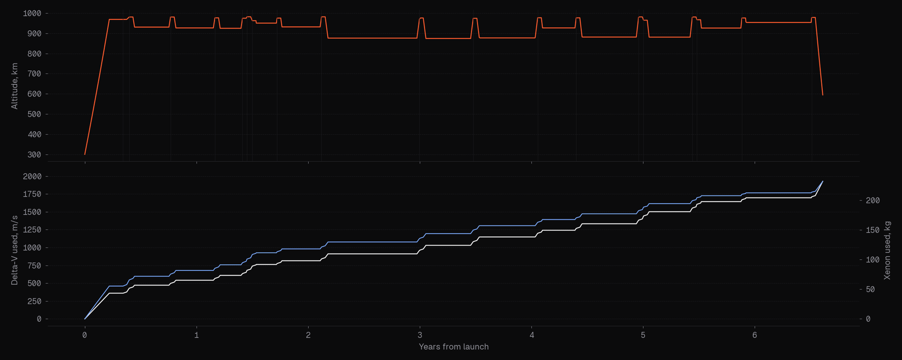
12The carrier and its transfers
No rideshare reaches 83°, so this is a dedicated launch, and direct insertion at 975 km would free 363 m/s. From a 300 km drop-off the carrier spirals up on electric thrust at 166 mN, drops below each target, waits for the planes to meet, and climbs back. Every transfer is computed both as an ideal Hohmann and as a real low-thrust spiral. The delta-V matches to 0.03%, but the time does not: a 100 km round trip takes 22 days against 1.7 hours, with thrust on for 76% of the time because of eclipses. The full replay flies 19 objects in 1,928 m/s and 232 kg of xenon, including insertion and disposal of the carrier within five years. The 2025 figure of 20 objects in 511 days does not survive real thrust, phasing and stops: the best is 1,491 days.

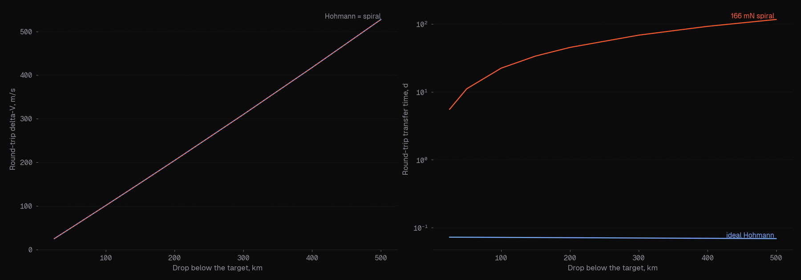
13Storing the tugs
My capacity analysis put four tugs on each port, in two rows, for 40. The box it used turned out to be a 12U canister envelope, and a true 8U is 226 × 226 × 227 mm. Against the real port box, 40 tugs fit only in purpose-built tandem tubes, eight per port, at 239 kg a port. That is inside the 257 kg rating but over the 220 kg heritage figure. Commercial canisters give 20 in all, and losing one more port gives 32. The tubes are a new design and have to be qualified. Each tube carries a spring release, and the carrier has to manage the centre of mass as tugs leave.

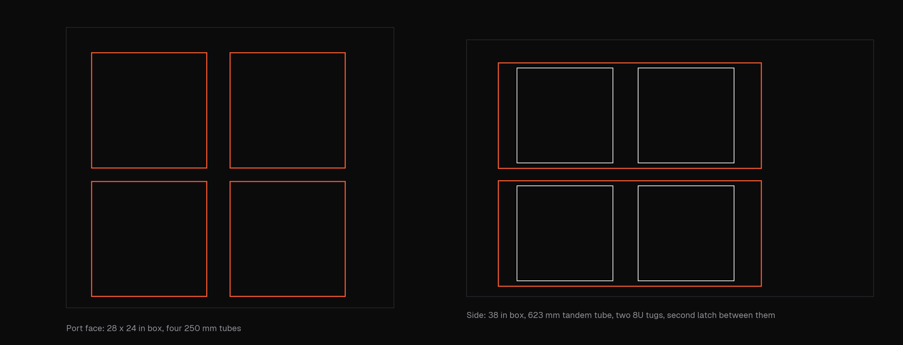
14What a tug can really do
I had assumed a 12 kg tug. A bottom-up build comes to 23.6 kg with margin, and the published figure is 17.7 kg. Four kilograms of xenon does not fit either: it needs 9.6 litres of the 7.2 available, and only 1.3 kg of xenon fits. Iodine does fit, so the tug uses that. A pair then gives 54 to 74 m/s to a 1,435 kg stage. That lowers it to about 869 km and cuts its life from about 1,073 years to 280 to 427 years. Two tugs removing a stage does not close.
Three things do close on paper. Stabilise and dodge: a pair holds the stage stable and spends 11.6 mm/s for a 6 km miss with two days' warning. A tug swarm: five to seven tugs per stage for a 25-year life, so five to eight stages from 40 tugs. Paired electric kits of about 41 kg each: up to 12 stages, with a 63-day descent and about three times the value of dodging, but they are no longer 8U.

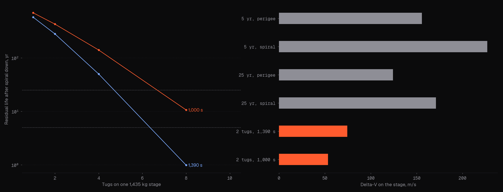
15Sticking on and stopping the tumble
The tumble turned out to be gentler than my notes assumed. Measured SL-8 periods give 0.37 to 3.1 degrees a second, with a median of 0.56 from seven objects, and three of ten passes read stable. The older claim of a 3 degree median and a tail over 10 degrees has nothing behind it, so an eddy-current coil is not a mandatory first step, only a fallback.
Holding on is easy: 7.7 N at a 5% derate. Getting on is the hard part. Contact has to happen between 1.4 and 13 cm/s, and the pad survives about 2.3 degrees a second at 0.5 m from the spin axis, which covers six of the seven measured rates. Moving to 0.3 m covers all seven. The tug pair then detumbles the stage: 1 degree a second takes 3.6 hours and 18 g, and the fastest measured rate takes 42 hours and 58 g. One tug alone cannot do it, because roll coupling leaves 0.89 degrees a second after 254 g, which is why spares matter. Once stopped, gravity-gradient attitude with the tugs on the +V wall keeps the plume off the stage and presses the pad into the wall.
The largest unknown is the surface. Nobody has tested an adhesive on a 40-year-old stage, and the 0.7 chance that a pad seats on an attempt is my judgement, not a measurement.

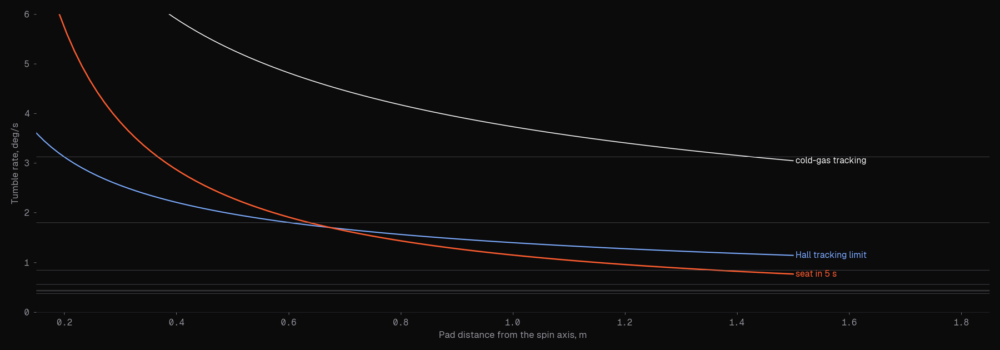

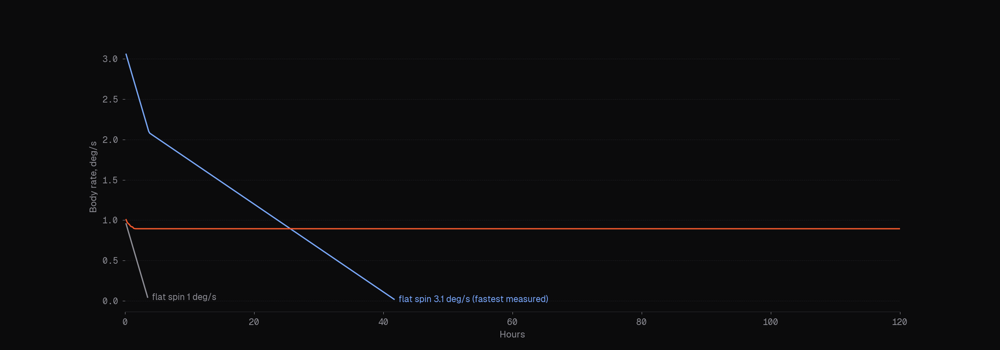
16Does the whole mission close
With 40 tugs at the bottom-up mass, launch mass is 2,382 kg: bus 900, tubes 253, tugs 944, xenon 285. In 4,000 runs with a bus failure rate of 0.05 a year and a 0.7 seat chance, a carrier stabilises about 12 objects with spares (5 to 95%: 3 to 16), or 8.8 with no spares. The adhesive assumption dominates. The cost class is about $837 million (1 sigma $192 million), or about $70 million per stabilised object, with launch assumed at $75 million.
Still open: the 13-year tug life, because the radiation bracket of 5 to 17 krad a year gives 0.6 to 6 years on commercial parts and needs a proper AP-9/AE-9 run; the aged surface; and consent, because every target belongs to a launching state under the Outer Space Treaty, so nothing can be touched without its owner's agreement and a licence.
The concept I would carry forward is the stabilising tug for the near term, and paired electric kits if the goal is real removal. Both need a flight test of the pad on an aged surface before anything else.

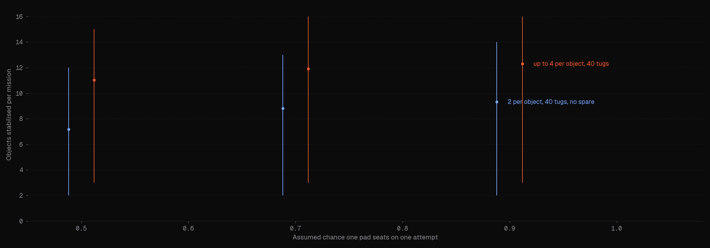

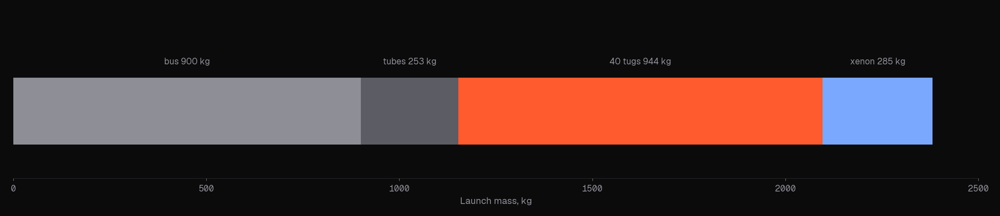
17Which derelicts actually drive collisions
After the nanotug result I dropped the requirement to use any particular vehicle and started again from the goal. First I replaced my risk score with a calculation: collision probability for each massive derelict against the whole catalogue, including encounters between two massive objects, multiplied by the fragments a collision makes and how long they stay up.
The top 20 are 19 SL-16 stages near 840 km and one recent stage, and NORAD 27006 ranks first. The top 50 are 20 SL-16, 20 SL-8, 7 recent Chinese stages, Envisat, one H-2 and one payload. As a family the SL-8 holds the most, 41% of ranked risk, and the 900 to 1,000 km band holds 46%. Across 12 ranking variants only 22 objects stay in place (20 SL-16, Envisat and one recent stage). The order within the SL-8 family is not robust, so I would not trust a precise ranking there.

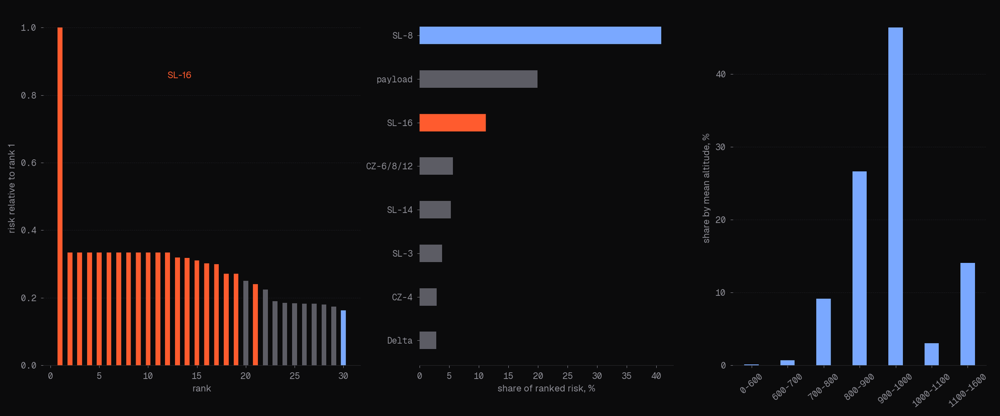
18What removal does over time
I built a 200-year model of LEO to measure success in the only unit that matters: collisions avoided. From the 2026 catalogue with steady traffic, it gives 28.5 catastrophic collisions in 200 years, and the population goes from 31,348 to 35,729 (5 to 95%: 27,933 to 47,565). Removing the top-ranked objects for 30 years avoids 2.4 collisions at 2 a year, 5.0 at 5 a year, 8.2 at 10 a year and 12.0 at 20 a year. Single histories scatter far more than this, so nobody would ever see the benefit directly. It only shows up on average.
I checked the model against published results before believing it. Collision rates match (one every 7.8 years against 5 to 9), the five-a-year result is close, and the hindcast of the 2009 debris still in orbit in 2026 gives 9,274 against the catalogue's 9,312. The size of long-term growth does not match, and I have not isolated why: disposal-only growth is +26% against about +75%, and the IADC case gives −22% against +30%. It takes 164 removals per collision prevented against the published 52. So collisions avoided are probably low by up to about 3 times. That changes the cost per collision, but not the order of the options.
Later calibration: the sections below raise the baseline to about 34 collisions, and bring long-term growth closer to the published models. Disposal-only growth becomes +70% against about +75%, and removals per collision prevented 130 against 52. It is reduced, not closed: IADC growth is still +5% against +30%.

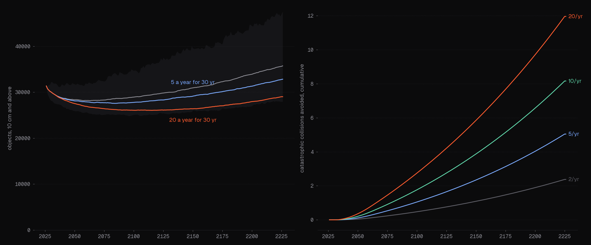

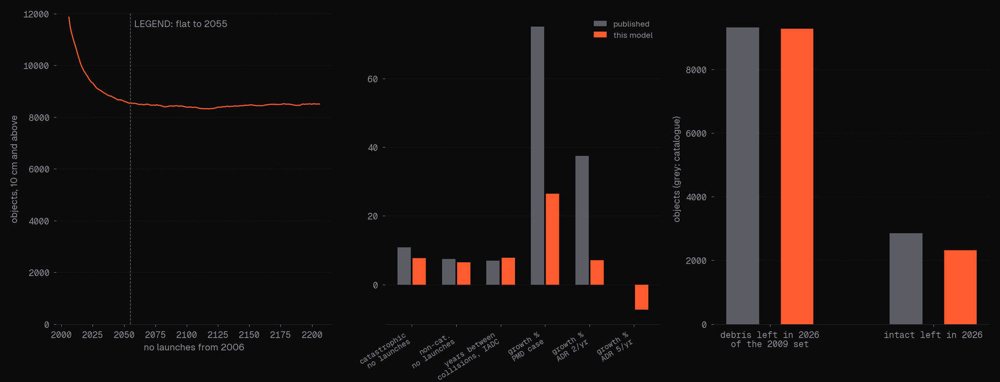

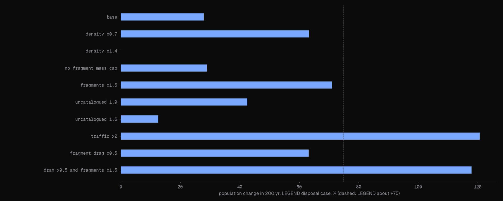
19Every option on one scale
I compared the options on the same model, and one constraint decided most of it. An uncontrolled entry of an SL-8 is 3.2 times over the 1-in-10,000 ground casualty limit, and an SL-16 is 7.3 times over. So removal has to be a controlled entry, and that needs a chemical burn. Sails (700 to 1,100 m² for a 25-year life), tethers, ion beams, paired electric kits and partial lowering all end in an uncontrolled entry. A kilonewton burn also needs a stiff load path: the pad, harpoon, net and nozzle probe have none proven, and a pad would need 83 m² at a 20% aged derate. Only the payload adapter ring works. Ground lasers avoid 0.27 collisions at 25 years, but that is gone by 200 years (−1.05), because the stages are still there.
Reusable shuttles did not fail. Over about 100 objects, electric and chemical shuttles tie with deorbit kits at 1.4 to 1.5 billion dollars per collision, inside the error. I rank them second on maturity, required life and exposure to a single failure.

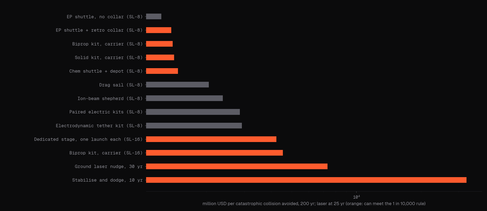
20Is control enough?
The question was whether we need to deorbit at all, or whether controlling an object is enough, with removal left to a later mission. On 50 top objects:
- Full removal: 2.15 collisions avoided, $3.66 billion.
- Lower to a 25-year orbit: 1.72 avoided, $3.36 billion, and over the ground casualty limit.
- Hold and dodge, 10-year kit: 0.07 avoided, $2.34 billion.
- Control now, remove in 10 years: 2.11 avoided, $5.45 billion.
- Park at 650 km, remove in 10 years: 2.06 avoided, $5.78 billion.
- Do nothing for 10 years, then remove: 2.04 avoided, $3.66 billion.
Control alone is not enough, and it is not worth buying as a step. A held stage keeps its mass and area, and when the kit dies it is a derelict again: the difference is 0.002 collisions. Dodging is cheap in propellant (350 dodges take 0.9 kg), so radiation sets the life, at 0.6 to 6 years on commercial parts against a stage that lasts centuries. Warnings are the real limit: a two-day-old 3 km position error catches 22% of collisions at 35 dodges a year, and 0.5 km catches 92% at 10 a year. Both objects need that accuracy, and a beacon fixes only one. Preparing an object makes the later mission about 15% cheaper, on assumed inputs, but the total is still 46% more than going direct. And waiting 10 years loses only 5% of the benefit, so control buys what waiting gives for free. Tracking and dodging also have no payer, so one contract should end with the object gone.

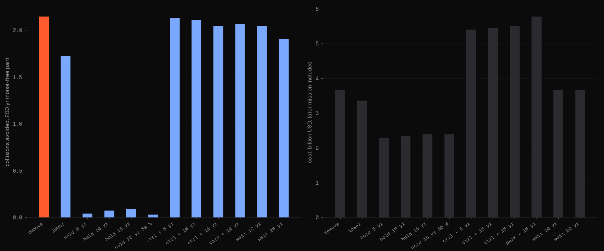

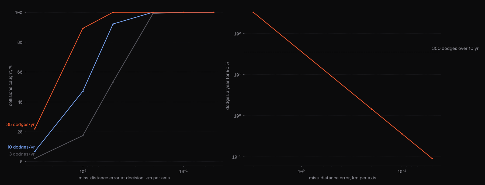
21From the carrier to the stage
My earlier campaign scheduled each kit to reach its stage a day after release, and that was a placeholder: no trajectory had been computed. So I computed four options with J2, a Monte Carlo of 600 draws each and passive safety, asking what happens if a kit dies on the way.
- Carrier holds 1 km away and the kit crosses: 1.2 m/s, but 57% of dead kits pass inside 30 m of the stage. This was the earlier assumption, and it is the worst.
- Carrier stands off 20 km: 11.9 m/s, and a dead kit misses by 65 m.
- Fly-by release from 150 km below: 76.8 m/s, missing by 115 m.
- Fly-by to a co-elliptic orbit, then a passively safe close: 78.5 m/s, and a dead kit misses by 1.7 km.
The last one wins, flown from 200 km in practice. The carrier settles on one drift orbit 200 km below its targets and never stops. As each target's plane crosses it, a kit climbs on a Hohmann transfer to a point 3 km below and behind the stage, then closes on a path that stays safe if it fails. The carrier places 20 kits in 3 years, against 11 to 15 for stop-and-rendezvous, and its xenon falls from 520 kg to about 150 kg (an estimate). Kits grow only slightly, to 376 kg and 983 kg, at up to 123 m/s of rendezvous delta-V. The price is that each kit does its own close survey, with ground contact only, and release needs the stage's position to about 300 m. That autonomy is now the riskiest step.

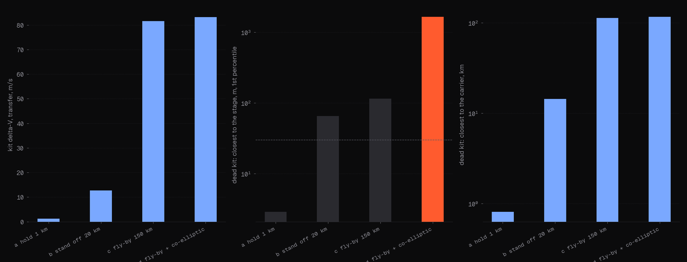

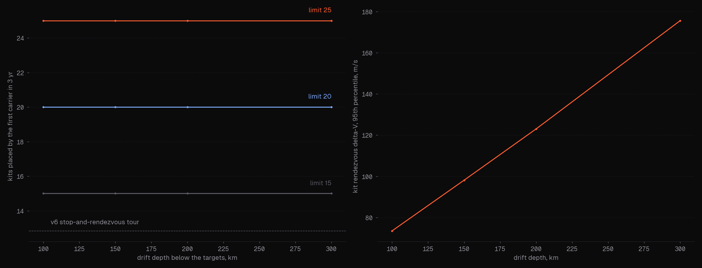
22How many kits fit: stacked rings
One ring limits a carrier to five usable ports. Stacking rings fixes that: two give 10 ports, three give 15 and four give 20. Several units per port works only for 8U tugs, though. An SL-8 kit needs a whole 24-inch port, with a +52% moment margin on the tested rating but only +1% on heritage loads. An SL-16 kit fits no port and stays on a custom carrier.
Four rings is the limit: 9.9 t, 5.7 m tall, with 6.5 t above the lowest ring. Five fail the ring load and height checks. The stacked limit is a primary-payload figure read across, and I could not find launcher centre-of-gravity limits, so both stay open. I also found that the carrier itself exceeds the casualty limit on re-entry, which the earlier design missed, so one kit on each carrier brings the carrier down. That leaves 19 stages per carrier.

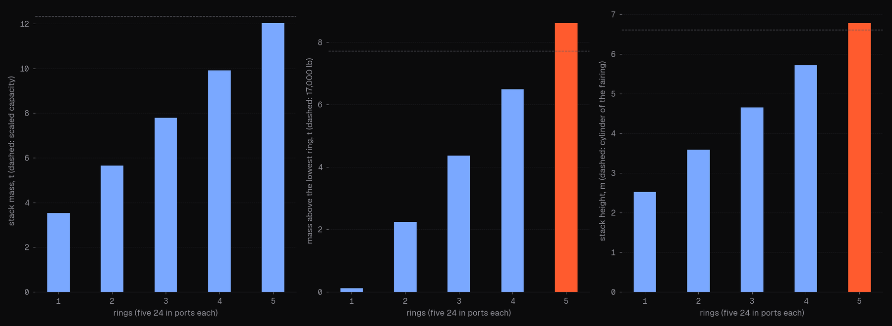
23Removing more of the collisions
I broke the baseline down to see what removal can reach at all. A fragment calibration against three large breakups (catalogued pieces run 1.1 to 2.8 times the NASA law, so I used 1.5) raised the baseline from 28.5 to about 34 collisions in 200 years, so compare shares, not counts. Of those, 57% involve an object of 1 t or more, and 89% include a derelict intact object, which is the most removal could ever reach. But 64% would not happen with no traffic after 2026: they come from objects that have not been launched yet.
That changes the answer. Removal alone reaches 25% with about 263 objects, for about $9 billion, and it cannot reach 50%: removing all 1,257 candidates gives 46% for about $23 billion. Stricter rules do more. Raising satellite disposal from 98 to 99.5% avoids 28%, as much as 300 removals, and rocket-body disposal from 90 to 99% adds 7%. Together those rules give 34% at no launch cost to a removal programme, and adding about 250 removals, about $8 billion, reaches 50%. Removal tops out at 66% even with the rules, and 75% needs sustained avoidance as well. The rules also have to hold: if active avoidance falls from 99% to 90%, collisions rise by 52%.
Timing matters less than I expected: starting in 2028 gives 28% and 2050 gives 25%. Targeting the specific pairs most likely to hit each other did not beat the risk ranking (11% against 13% for 100 objects), although the model lumps objects by class and shell, so that is a lower bound. Avoidance on massive pairs, assuming 90% effect, gives 5% if run for 30 years and 32% if kept up for 200.

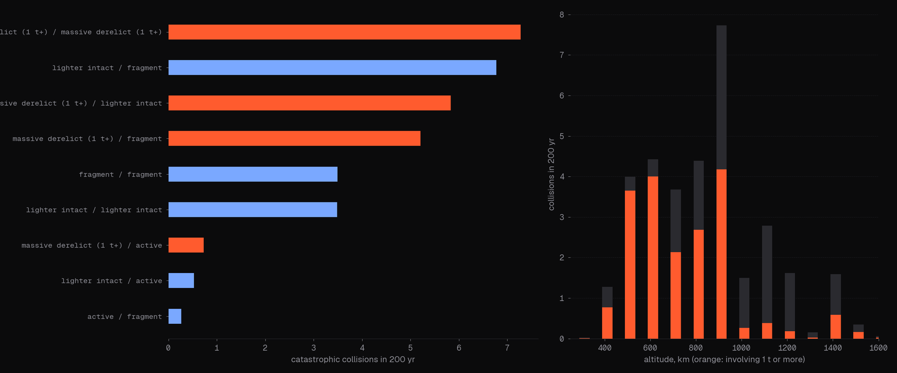

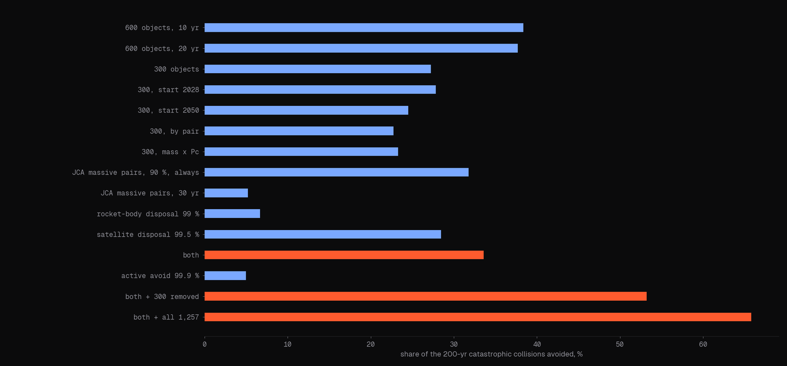

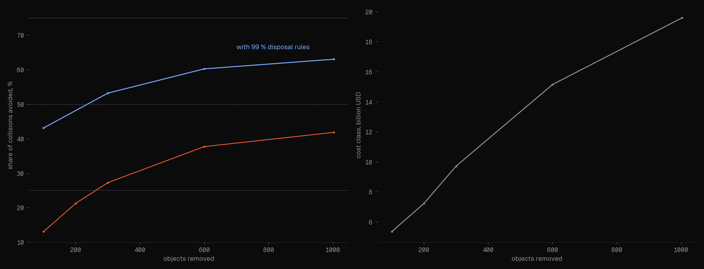
24The best mission I found
Each carrier stacks four rings with 20 kits, settles 200 km below its targets and uses the nodal drift from my original work to bring planes to it. Kits leave as planes cross. Each one closes on a safe path, clamps the payload adapter ring with three jaws, stops the tumble, and fires one 9 to 13 minute burn to a 60 km perigee. Stage and kit enter together over the South Pacific.
That is 9 launches from 2034, 146 kits (131 for the SL-8 shell near 975 km, 15 for SL-16 stages), and about 117 objects removed (5 to 95%: 99 to 129). It avoids 5.9 of 34.7 collisions over 200 years, or 17% (90% interval on the mean 5.1 to 6.7). The cost class is $5.9 billion (1 sigma 36%), $51 million per object and $1.0 billion per collision avoided, which per share of the baseline is 33% cheaper than my earlier design.
My verdict: this is still a public decision, not a commercial case, and the benefit takes a century to show. The strongest result is that disposal rules for new satellites beat removal, and the best programme is both: rules first, then about 250 removals to reach half. The first flight should test the riskiest steps: kit autonomy near a real stage, and a close look at a real adapter ring and SL-16 tumble, because both are still assumptions. Consent matters too: one state owns 41 of the top 50 objects.

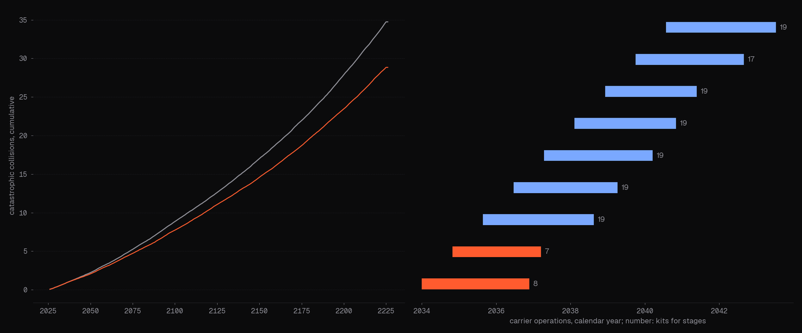

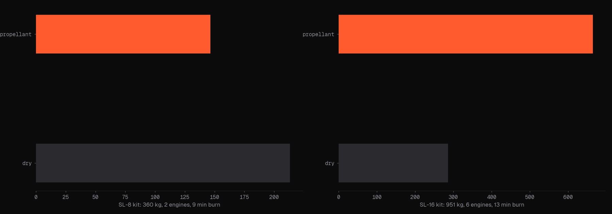
25Where it stands
Honest status: the first version measured its savings against a naive baseline, and its largest claims (a 38-object tour, a 95.4% cut in future collisions, a 59.8% saving) did not survive review. The paper replaces them with fair baselines on one frozen catalogue snapshot. A tour that waits at a lowered altitude reaches a median 29 objects at 2 km/s and 7 years, against 9 with impulsive plane changes and 6 by waiting at the same altitude. The price is time: such a tour takes 2,500 to 5,300 days, where impulsive tours take weeks. What is new is the evidence (the audit, the frozen snapshot, the exact-optimum check and the fair baselines), not the astrodynamics.
Best mission update: the tour method survives and drives the final mission. The 8U tug and control alone do not. The best campaign removes about 117 objects for about $5.9 billion and avoids 17% of expected collisions over 200 years. Disposal rules do more, and rules plus about 250 removals reach 50%.